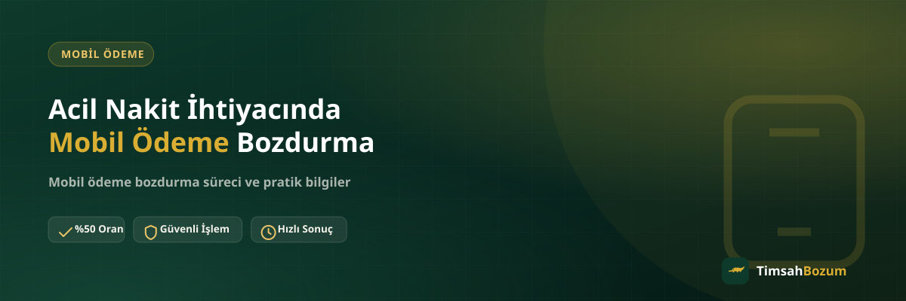
Acil Nakit İhtiyacında Mobil Ödeme Bozdurma
Beklenmedik bir masrafta elindeki mobil ödeme bakiyesini nasıl güvenli ve hızlı şekilde nakde çevirebileceğini, sürecin adımlarını ve dikkat etmen gerekenleri anlatıyoruz.
Devamını oku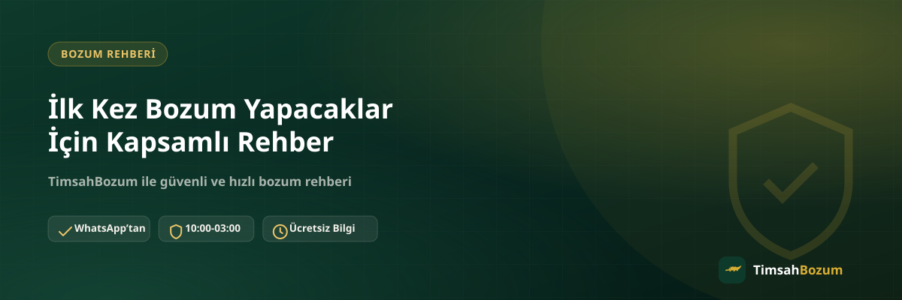
İlk Kez Bozum Yapacaklar İçin Kapsamlı Rehber
İlk kez bozum yapacaklar için adım adım rehber: hangi hizmeti seçmelisin, ilk mesajını nasıl yazarsın, oranı nasıl teyit edersin ve nelere dikkat etmelisin.
Devamını oku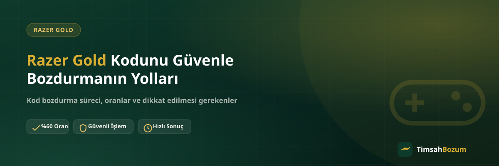
Razer Gold Kodunu Güvenle Bozdurmanın Yolları
Razer Gold kodunu bozdururken güvenliğini nasıl korursun? Kod paylaşımı, doğru hat ve oran teyidiyle ilgili bilmen gerekenleri anlatıyoruz.
Devamını oku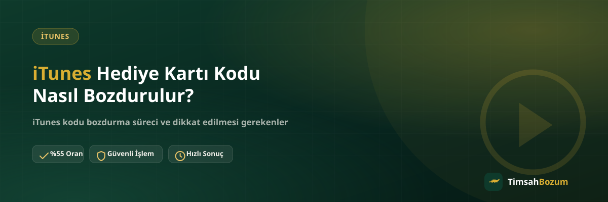
iTunes Hediye Kartı Kodu Nasıl Bozdurulur?
Elinizde kullanılmayan bir iTunes hediye kartı mı var? Kodu hesaba yüklemeden güvenli şekilde nakde çevirme sürecini adım adım anlatıyoruz.
Devamını oku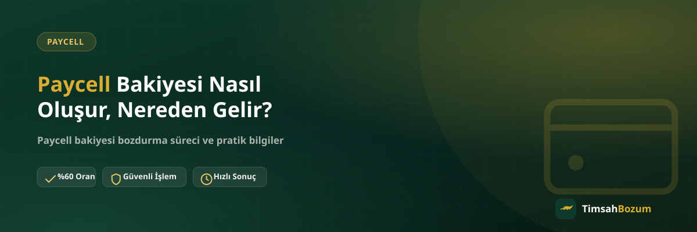
Paycell Bakiyesi Nasıl Oluşur, Nereden Gelir?
Paycell bakiyesi nereden gelir, nasıl oluşur? Bakiye tabanlı bu hizmeti bozdurmadan önce kaynağını ve güvenli bozdurma sürecini anlatıyoruz.
Devamını oku
Pokus Bakiyesi Nedir, Nasıl Oluşur?
Pokus bakiyesi nedir, nasıl oluşur ve nerelerde kullanılır? Bakiye tabanlı bu hizmeti bozdurmadan önce bilmen gerekenleri anlatıyoruz.
Devamını oku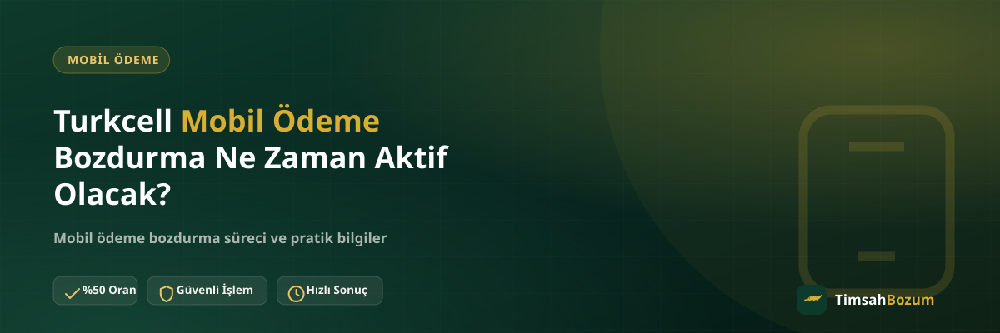
Turkcell Mobil Ödeme Bozdurma Artık Aktif mi?
Turkcell mobil ödeme bozdurma artık aktif: doğrudan %30, Paycell üzerinden %60 oranla nasıl işlediğini ve nelere dikkat etmen gerektiğini anlatıyoruz.
Devamını oku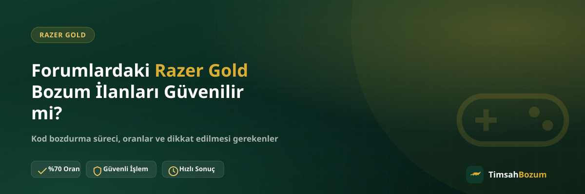
Forumlardaki Razer Gold Bozum İlanları Güvenilir mi?
Forumlarda ve gruplarda çıkan Razer Gold bozum ilanlarına güvenmeden önce nelere dikkat etmelisin? Sahte ilanı gerçek hizmetten ayırmanın yollarını anlatıyoruz.
Devamını oku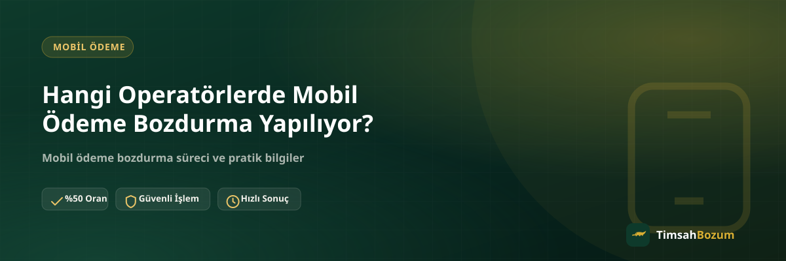
Hangi Operatörlerde Mobil Ödeme Bozdurma Yapılır?
Vodafone, Türk Telekom ve Turkcell hatlarında mobil ödeme bozdurma nasıl işler, oranlar operatöre göre nasıl değişir? Hepsini bu yazıda karşılaştırdık.
Devamını oku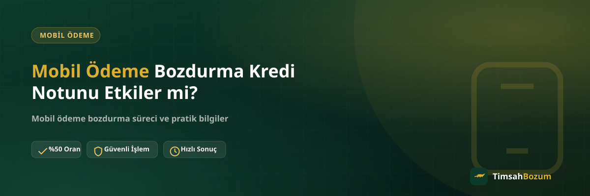
Mobil Ödeme Bozdurma Kredi Notunu Etkiler mi?
Mobil ödeme bozdurma kredi notunu etkiler mi? Kredi kayıtları ile bozum süreci arasındaki ilişkiyi ve dikkat edilmesi gereken noktaları anlatıyoruz.
Devamını oku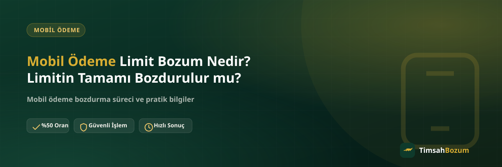
Mobil Ödeme Limit Bozum Nedir? Limitin Tamamı Bozdurulur mu?
Mobil ödeme limit bozum nedir, limitin tamamı mı bozdurulur yoksa bir kısmı mı? Limit ile bakiye arasındaki fark ve süreç bu yazıda anlatılıyor.
Devamını oku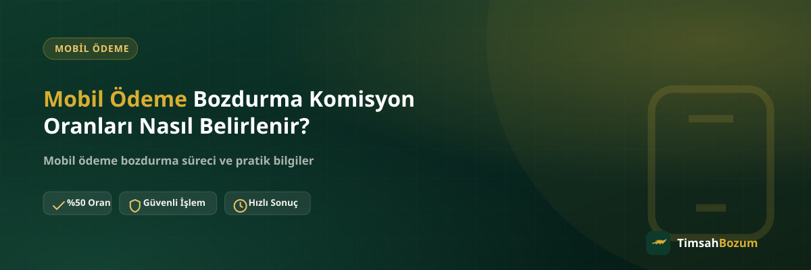
Mobil Ödeme Bozdurma Komisyon Oranları Nasıl Belirlenir?
Mobil ödeme bozdurmada komisyon oranı nasıl belirlenir? Vodafone, Türk Telekom ve Turkcell için güncel oranlar ve teyit süreci bu yazıda anlatılıyor.
Devamını oku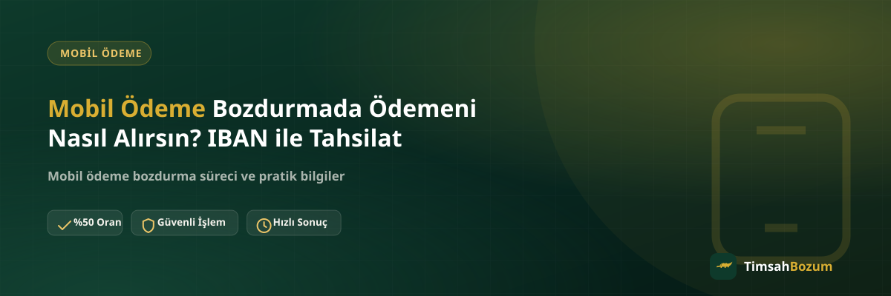
Mobil Ödeme Bozdurmada Ödemeni Nasıl Alırsın? IBAN ile Tahsilat
Mobil ödeme bozdurma işleminde ödemen nasıl hesaba geçer, IBAN ile tahsilat nasıl işler? Süreci ve dikkat edilmesi gereken noktaları bu yazıda anlatıyoruz.
Devamını oku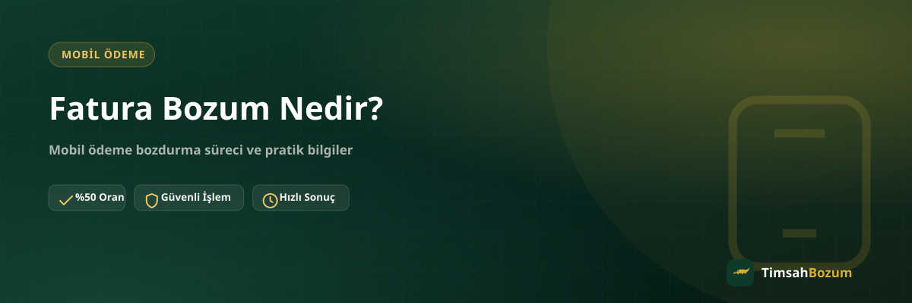
Fatura Bozum Nedir?
Fatura bozum nedir, mobil ödeme bakiyesi faturana nasıl yansır? Süreç, güvenilirlik ve dikkat edilmesi gereken noktaları bu yazıda anlatıyoruz.
Devamını oku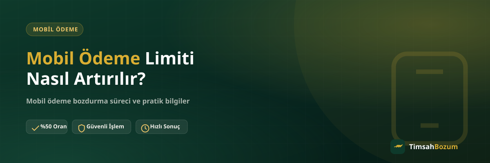
Mobil Ödeme Limiti Nasıl Artırılır?
Mobil ödeme limitini artırmak için neler yapılabilir, süreç nasıl işler? Operatör bazında dikkat edilmesi gerekenleri bu yazıda anlatıyoruz.
Devamını oku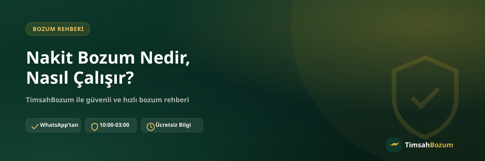
Nakit Bozum Nedir, Nasıl Çalışır?
Nakit bozum ne anlama gelir, hangi hizmetleri kapsar? WhatsApp üzerinden yürüyen süreç, güvenilirlik ve dikkat edilmesi gereken noktalar.
Devamını oku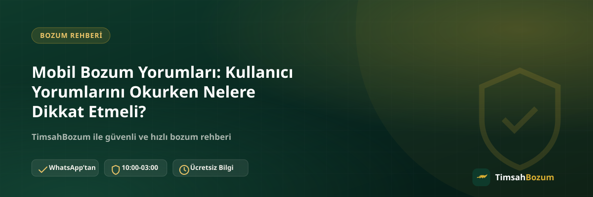
Mobil Bozum Yorumları: Kullanıcı Yorumlarını Okurken Nelere Dikkat Etmeli?
Mobil bozum yorumlarını okurken nelere dikkat etmelisin? Sahte yorumları ayırt etme, güvenilir kaynak seçme ve resmi hattı doğrulama rehberi.
Devamını oku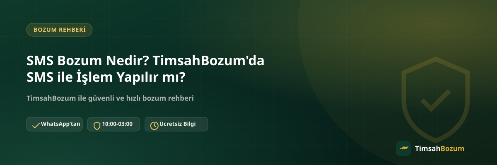
SMS Bozum Nedir? TimsahBozum'da SMS ile İşlem Yapılır mı?
SMS bozum ne anlama geliyor, işlemler SMS üzerinden mi yürüyor? WhatsApp üzerinden yürüyen süreç ve SMS doğrulama kodu uyarısı.
Devamını oku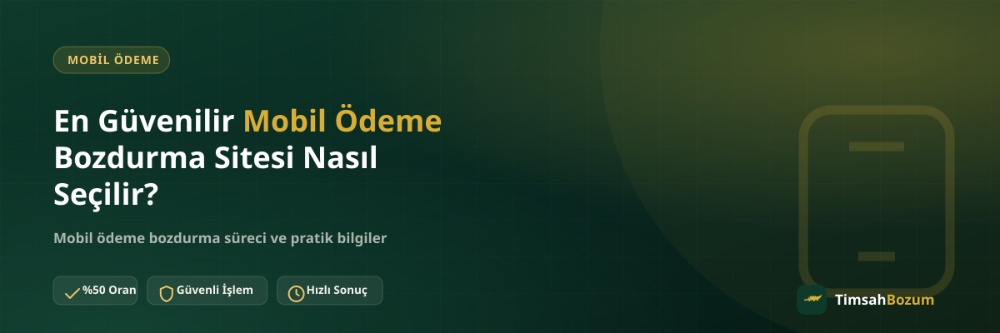
En Güvenilir Mobil Ödeme Bozdurma Sitesi Nasıl Seçilir?
Mobil ödeme bozdurma sitesi seçerken güvenilirliği nasıl anlarsın? Dikkat edilmesi gereken uyarı işaretleri ve kontrol noktaları.
Devamını oku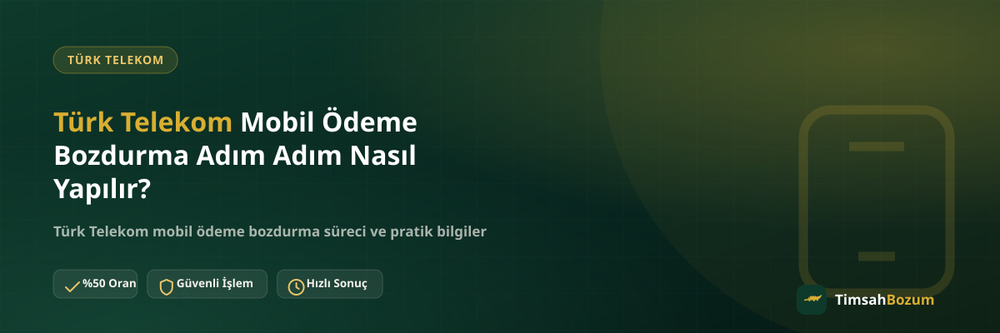
Türk Telekom Mobil Ödeme Bozdurma Adım Adım Nasıl Yapılır?
Türk Telekom mobil ödeme bakiyesini bozdurmak için gereken adımlar, paylaşılması gereken bilgiler ve dikkat edilmesi gerekenler.
Devamını oku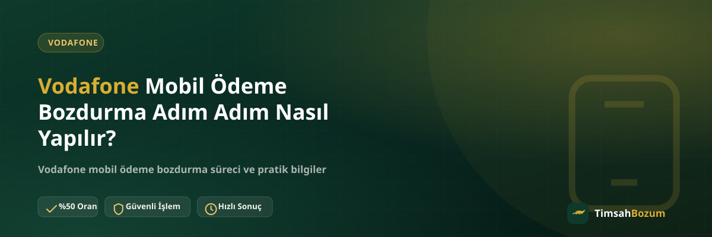
Vodafone Mobil Ödeme Bozdurma Adım Adım Nasıl Yapılır?
Vodafone mobil ödeme bakiyesini bozdurmak için gereken adımlar, paylaşılması gereken bilgiler ve dikkat edilmesi gerekenler.
Devamını oku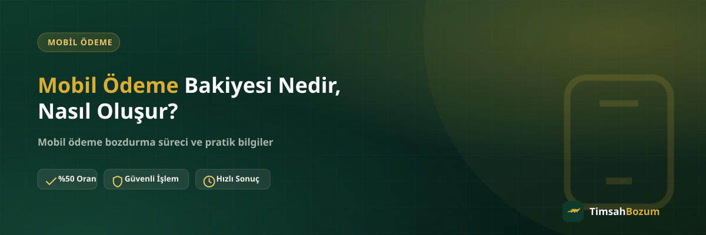
Mobil Ödeme Bakiyesi Nedir, Nasıl Oluşur?
Mobil ödeme bakiyesi nedir, nasıl oluşur, nereden gelir? Bakiyenin kaynağı, kullanım alanları ve bozdurma süreciyle ilgili merak edilenler.
Devamını oku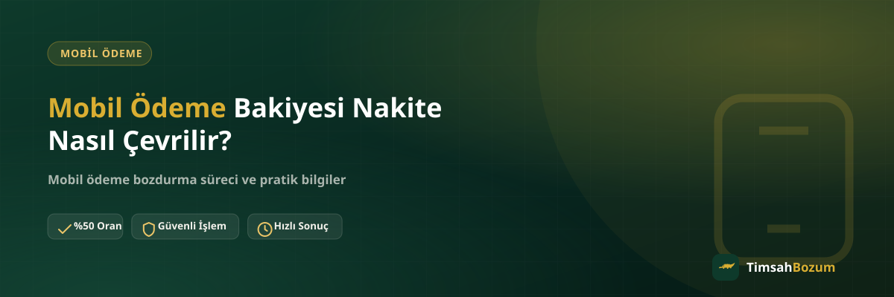
Mobil Ödeme Bakiyesi Nakite Nasıl Çevrilir?
Mobil ödeme bakiyesi nakite nasıl çevrilir? Süreç nasıl işler, hangi bilgiler gerekir, oranlar nasıl teyit edilir?
Devamını oku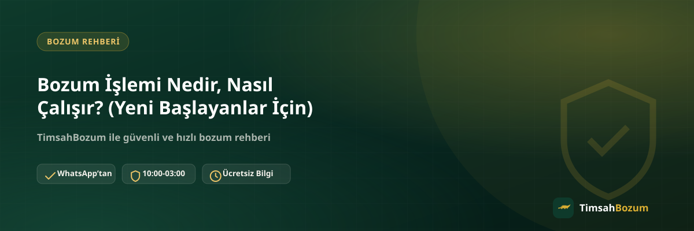
Bozum İşlemi Nedir, Nasıl Çalışır? (Yeni Başlayanlar İçin)
Bozum işlemi ilk kez duyanlar için ne anlama geliyor? Kod ve bakiye tabanlı bozumun farkı, adım adım süreç ve dikkat edilmesi gerekenler.
Devamını oku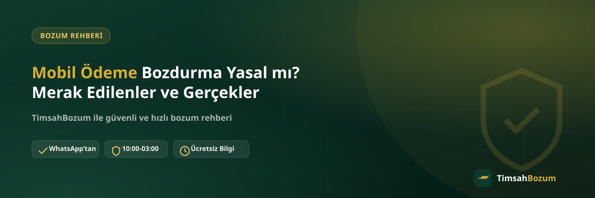
Mobil Ödeme Bozdurma Yasal mı? Merak Edilenler ve Gerçekler
İşlemin hukuki dayanağı, operatör kuralları, vergi boyutu ve asıl dikkat edilmesi gereken riskler.
Devamını oku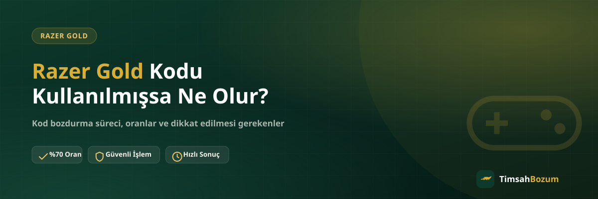
Razer Gold Kodu Kullanılmışsa Ne Olur?
Razer Gold kodun kullanılmışsa neden ödeme yapılamaz ve bu durumu önlemek için nelere dikkat etmelisin?
Devamını oku
iTunes Bakiyesi Nedir, Nereden Elde Edilir?
iTunes bakiyesi ve kodu nedir, nereden elde edilir, nerelerde kullanılır? Bozdururken bilmen gerekenler.
Devamını oku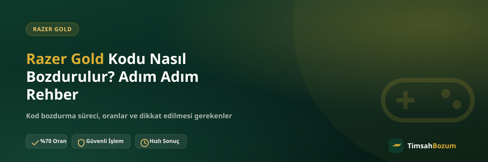
Razer Gold Kodu Nasıl Bozdurulur? Adım Adım Rehber
Razer Gold kodunu adım adım nasıl bozdurabileceğini öğren: kod paylaşımı, oran teyidi ve ödeme süreci.
Devamını oku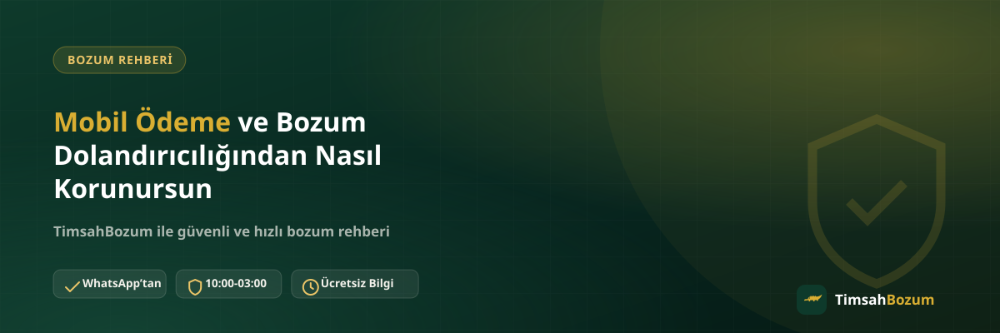
Mobil Ödeme ve Bozum Dolandırıcılığından Nasıl Korunursun
Mobil ödeme ve bozum alanında dolandırıcılık riskine karşı nelere dikkat etmelisin? Pratik kontrol noktaları.
Devamını oku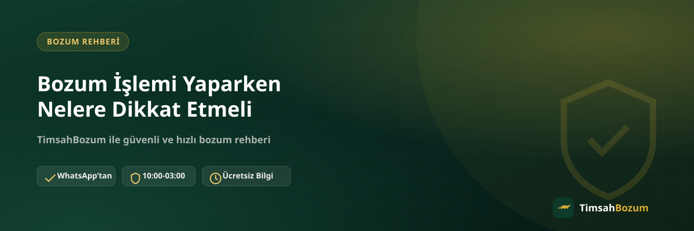
Bozum İşlemi Yaparken Nelere Dikkat Etmeli
Bozum işlemi yaparken nelere dikkat etmelisin? Güvenli ve sorunsuz bir işlem için kontrol listesi.
Devamını oku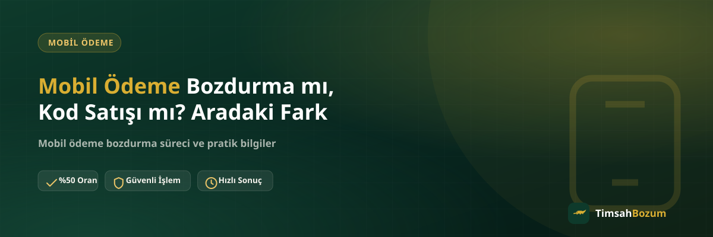
Mobil Ödeme Bozdurma mı, Kod Satışı mı? Aradaki Fark
Mobil ödeme bozdurma ile dijital kod satışı birbirine karıştırılır. Aradaki farkı ve hangisinin sana uygun olduğunu anlatıyoruz.
Devamını oku